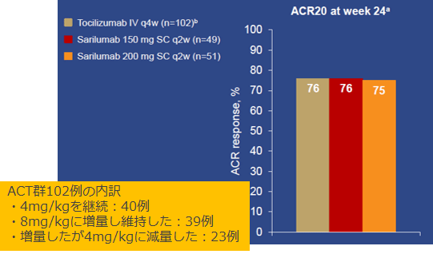
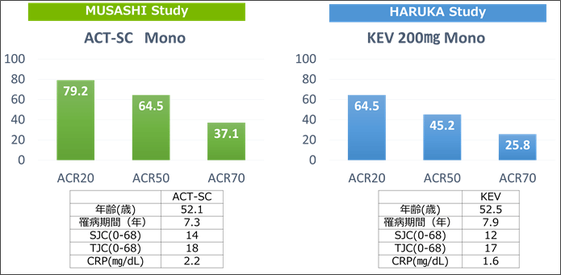

6. KEVはACTよりも効果が高い？

ASCERTIN試験のACT群は4mg/kgから開始、医師裁量で8mg/kgに変更できるという試験デザインでした。約40％がACTでは半量投与であったにも関わらず、24週時のACR20改善率はそうした状況下でも同様の結果だったようです。また、直接比較はできませんがほぼ同等の患者背景で実施された両剤のSCによる国内P3ではACTが高い成績を収めています。どうせ比較をされるのであればフェアな条件下で比較を行ってもらいたかったですね。
ASCERTIN試験におけるACR20改善率

